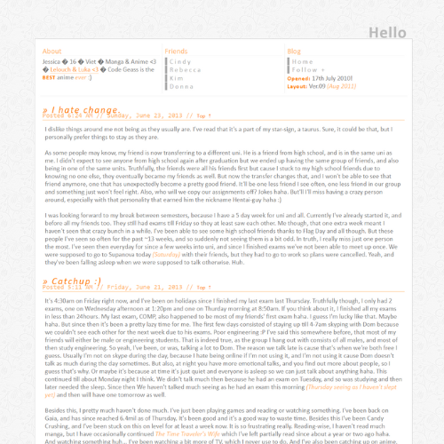

Projects
Below is a number of creative preojects I have done in the past as a placeholder for any upcoming works.
Thank you cards
Thank you cards created for my ebay store.
Grapeshot MQ Magazine
Contributed in designs for the monthly student magazine. Learnt to use InDesign and picked up on print standards.
Blog Layout v14
A layout experimenting with CSS hovers. Inspired by the wood grain background and a lot of orange.
Blog Layout v12

A simple design using a brighter color palette than my usual. Wanted to try a layout that wasn't designed to look boxed in.
Blog Layout v10
This was created to utilise a JS Accordian menu (not made by me). Colors centered around grey and blue this time to feel calming.
Blog Layout v09
A clean boxed in layout experimenting with creating columns in the navigation.